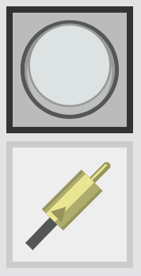

Interactive Turing Machine - Help
In our application we have four main parts:
Graph
The graph is the central part of the application . In that part, you can draw a state machine.
You can pan the graph by dragging the background of the graph. To go back to the initial position of the graph, click on the top left button: .

Node
A node in the graph represents a state of the Turing machine.
When you click on the node, a pop up appears. In that popup you can change:
- the name of the state;
- if the state is final, i.e. if the Turing machine stops when reaching this state. When the state is final, the node will looks like ;
- delete the state.
When the Turing machine is running, the node of the current state will looks like : .
To set a state as an initial state, draw a transition from the generator to the node.
.
To set a state as an initial state, draw a transition from the generator to the node.
Generator
When linking a node to the generator, the corresponding state will be set as the initial state of the machine.
Transition
Between two nodes, you can draw one edge. One edge correspond to one or more transitions in between the two corresponding states. If the edge represents one transition only, it would looks like  , if the edge represents two transitions or more, it would look like .
When you click the edge, you can set for each corresponding transition:
, if the edge represents two transitions or more, it would look like .
When you click the edge, you can set for each corresponding transition:
- the symbol to read from the tape to go through this transition;
- the symbol to write on the tape when going through this transition;
- the movement of the head of the tape to do after going through this transition;
- delete the transition.
Tape
The tape is the bottom left part of our application . It can be dragged and scroll. It contains cells . If you click on a cell, you can set one character as the content of the cell.
At the left of the tape you can see two buttons :
- : The first one allow you to input a string to fill the tape. Each character of the string provided will fill one cell.
- : The second one allows you to recenter the tape at the current cell, i.e. the next cell that the Turing machine will read.
The Turing machine control panel is the bottom right part of our application .
The three buttons from left to right correspond to:
- : Run the Turing machine until it crashes, arrives to a final state or did 1000 steps.
- : Run the Turing machine for one step.
- : Reset the Turing machine.
Import/Export
In the menu bar at the top, you can see two buttons: Import and Export.
Import
The import button is used to load a Turing Machine from a JSon.
Export
The export button is used to export the current Turing machine as a JSon
Interaction Mode
In our application, we support two interaction types: mouse interaction and Pen & Touch interaction.
Mouse Interaction
In the mouse mode, you will see on the side of the graph a tool bar with two tools :
 : The first one is the node tool. With that tool you can:
: The first one is the node tool. With that tool you can:
- Add a node by clicking on the graph
- Move a node by dragging a node
- : The second one is the edge tool. With that tool you can:
- Add a transition by dragging from one node to another
Pen & Touch Interaction
In the pen & touch mode:
- By using your finger you can:
- Add a node by clicking on the graph
- Move a node by dragging a node
- By using the pen you can:
- Add a transition by drawing a line from one node to another